Change analysis for Rwanda for PRIMAP-hist v2.7_final compared to
v2.6.1_final
Overview over
emissions by sector and gas
The following figures show the aggregate national total emissions
excluding LULUCF AR6GWP100 for the country reported priority scenario.
The dotted linesshow the v2.6.1_final data.
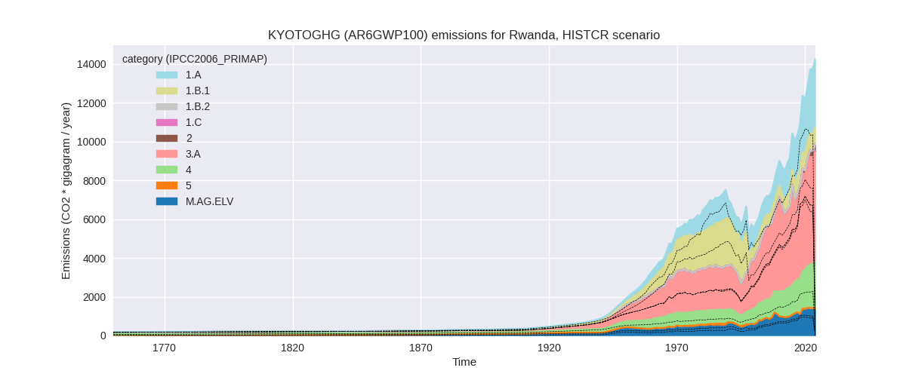
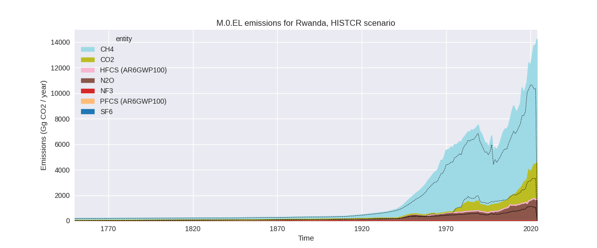
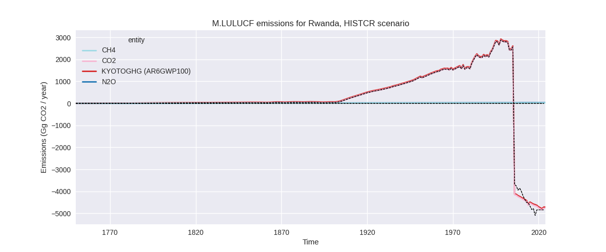
The following figures show the aggregate national total emissions
excluding LULUCF AR6GWP100 for the third party priority scenario. The
dotted linesshow the v2.6.1_final data.
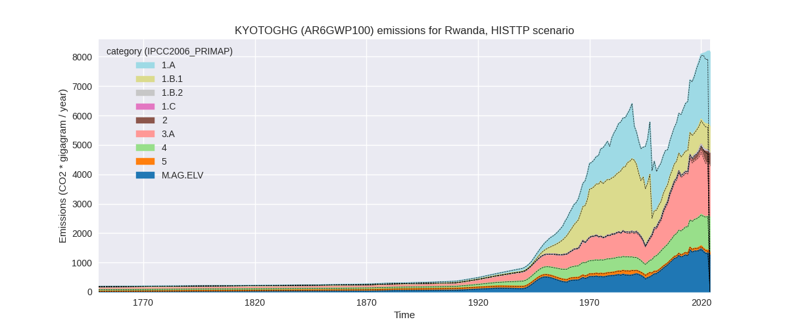
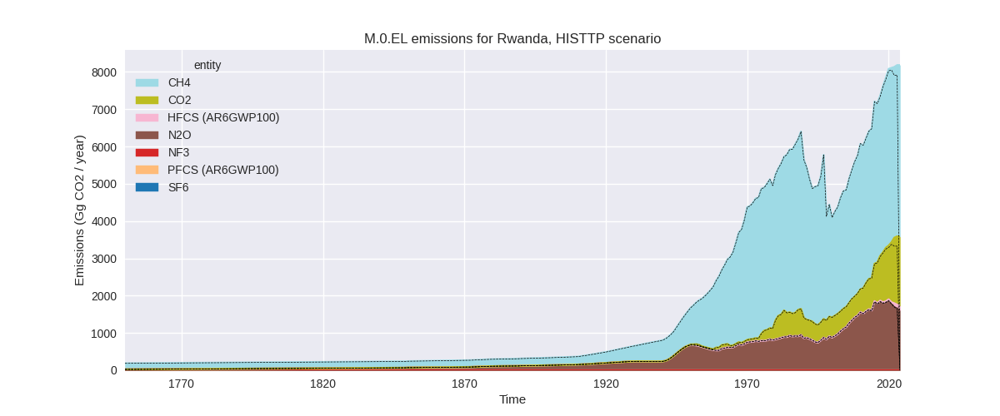
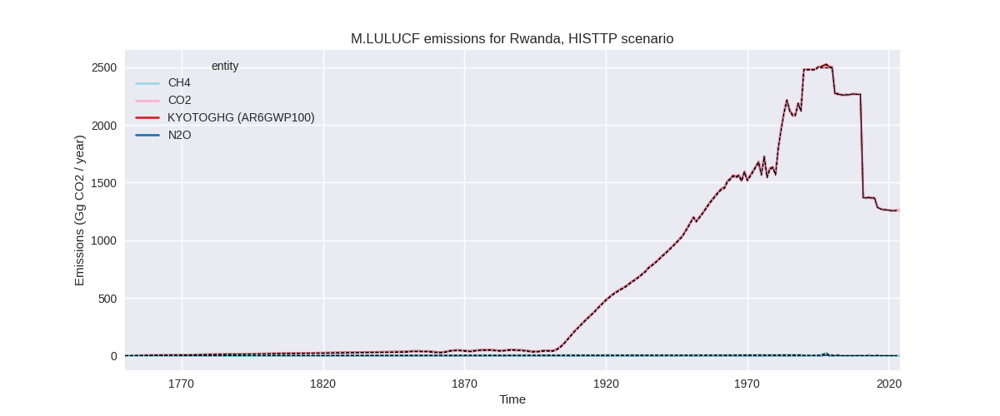
Overview over changes
In the country reported priority scenario we have the following
changes for aggregate Kyoto GHG and national total emissions excluding
LULUCF (M.0.EL):
- Emissions in 2023 have changed by 32.9%% (3404.79 Gg CO2 / year)
- Emissions in 1990-2023 have changed by 21.0%% (1439.30 Gg CO2 / year)
In the third party priority scenario we have the following changes
for aggregate Kyoto GHG and national total emissions excluding LULUCF
(M.0.EL):
- Emissions in 2023 have changed by 3.3%% (263.32 Gg CO2 / year)
- Emissions in 1990-2023 have changed by 0.3%% (16.63 Gg CO2 / year)
Most
important changes per scenario and time frame
In the country reported priority scenario the
following sector-gas combinations have the highest absolute impact on
national total KyotoGHG (AR6GWP100) emissions in 2023
(top 5):
- 1: 3.A, CH4 with 1139.08 Gg CO2 / year (28.2%)
- 2: 4, CH4 with 1021.00 Gg CO2 / year (98.5%)
- 3: 1.A, CO2 with 603.00 Gg CO2 / year (31.5%)
- 4: M.AG.ELV, N2O with 291.86 Gg CO2 / year (62.9%)
- 5: 3.A, N2O with 223.50 Gg CO2 / year (426.6%)
In the country reported priority scenario the
following sector-gas combinations have the highest absolute impact on
national total KyotoGHG (AR6GWP100) emissions in
1990-2023 (top 5):
- 1: 3.A, CH4 with 797.71 Gg CO2 / year (30.9%)
- 2: 4, CH4 with 462.33 Gg CO2 / year (80.9%)
- 3: M.AG.ELV, N2O with 231.42 Gg CO2 / year (77.2%)
- 4: 1.A, CO2 with -220.18 Gg CO2 / year (-18.6%)
- 5: 3.A, N2O with 123.73 Gg CO2 / year (221.8%)
In the third party priority scenario the following
sector-gas combinations have the highest absolute impact on national
total KyotoGHG (AR6GWP100) emissions in 2023 (top
5):
- 1: 1.A, CO2 with 160.43 Gg CO2 / year (12.4%)
- 2: 2, HFCS (AR6GWP100) with 84.00 Gg CO2 / year (468.8%)
- 3: M.AG.ELV, CO2 with 17.20 Gg CO2 / year (89.7%)
- 4: 2, CO2 with 2.79 Gg CO2 / year (0.8%)
- 5: 4, CO2 with -1.11 Gg CO2 / year (-29.8%)
In the third party priority scenario the following
sector-gas combinations have the highest absolute impact on national
total KyotoGHG (AR6GWP100) emissions in 1990-2023 (top
5):
- 1: 1.A, CO2 with 8.59 Gg CO2 / year (1.3%)
- 2: 2, HFCS (AR6GWP100) with 8.33 Gg CO2 / year (98.5%)
- 3: 4, CO2 with -0.27 Gg CO2 / year (-20.1%)
- 4: 2, CO2 with -0.23 Gg CO2 / year (-0.3%)
- 5: M.AG.ELV, CO2 with 0.21 Gg CO2 / year (3.0%)
Notes on data changes
Here we list notes explaining important emissions changes for the
country.
- CRT data from BTR1 has been added covering 2006 to 2022. It replaces
and extends data from BUR1. This has introduced high changes in many
sectors and gases.
- The two top reasons for the changes are that data extrapolated using
third party growth rates has been replaced by country reported data and
changes in country reported data. In most cases it is a combination of
both. As most sectors are affected we don’t list them here
individually.
- Fugitive emissions data is still taken from third party sources as
it is marked as not estimated in BTR1.
- In the TP scenario the most important change is a 12.4% increase in
energy CO2 due to the new EI data.
- HFC emissions are much higher due to the new CR data as they are not
included in third party data.
- CO2 from agriculture is also higher due to the new CR data.
- CO2 from waste is lower for the same reason
Changes by sector and gas
For each scenario and time frame the changes are displayed for all
individual sectors and all individual gases. In the sector plot we use
aggregate Kyoto GHGs in AR6GWP100. In the gas plot we usenational total
emissions without LULUCF.
country reported scenario
2023
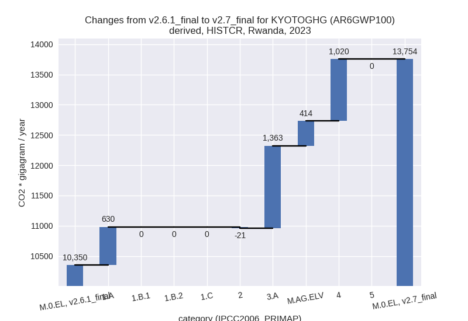
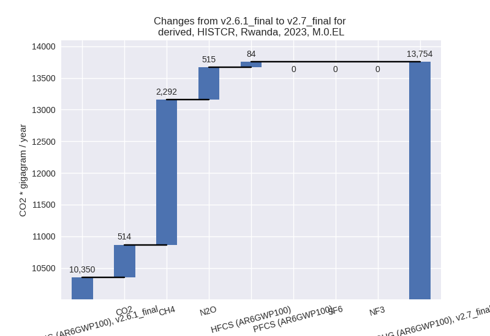
1990-2023
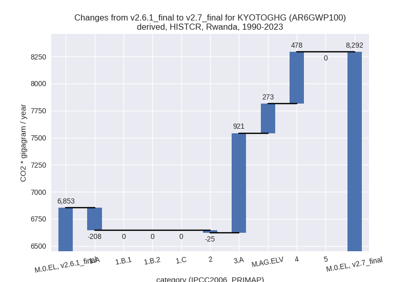
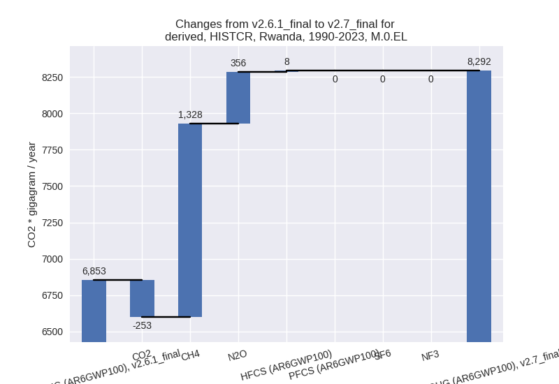
third party scenario
2023
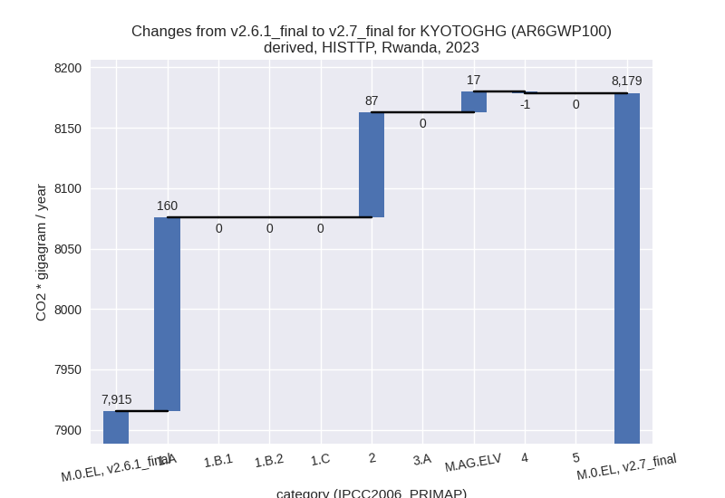
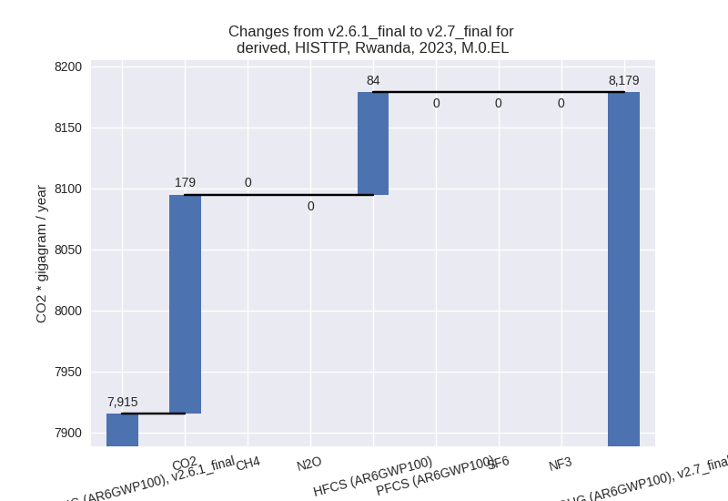
1990-2023
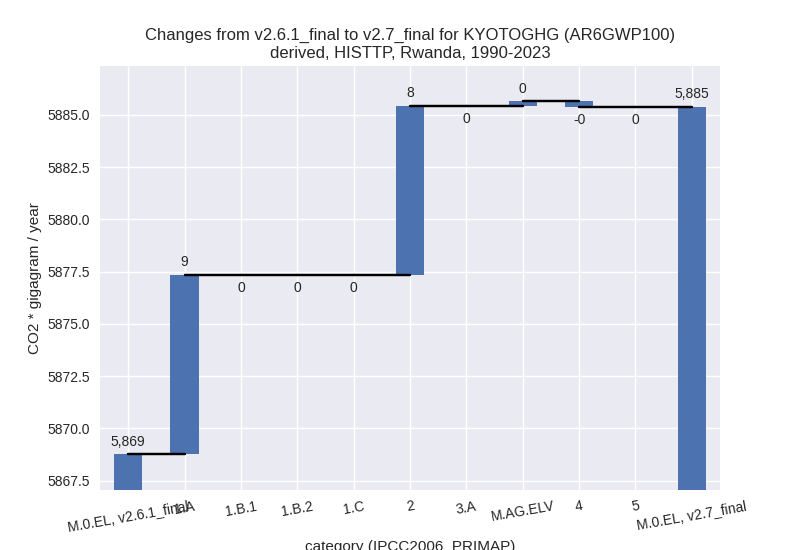
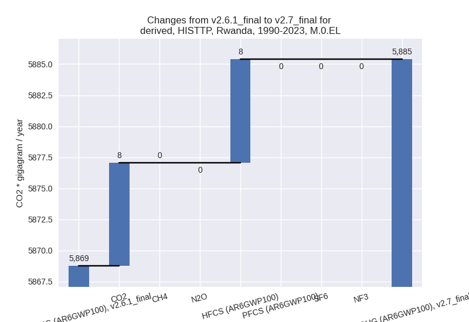
Detailed changes for the
scenarios:
country reported scenario
(HISTCR):
Most important changes
per time frame
For 2023 the following sector-gas combinations have
the highest absolute impact on national total KyotoGHG (AR6GWP100)
emissions in 2023 (top 5):
- 1: 3.A, CH4 with 1139.08 Gg CO2 / year (28.2%)
- 2: 4, CH4 with 1021.00 Gg CO2 / year (98.5%)
- 3: 1.A, CO2 with 603.00 Gg CO2 / year (31.5%)
- 4: M.AG.ELV, N2O with 291.86 Gg CO2 / year (62.9%)
- 5: 3.A, N2O with 223.50 Gg CO2 / year (426.6%)
For 1990-2023 the following sector-gas combinations
have the highest absolute impact on national total KyotoGHG (AR6GWP100)
emissions in 1990-2023 (top 5):
- 1: 3.A, CH4 with 797.71 Gg CO2 / year (30.9%)
- 2: 4, CH4 with 462.33 Gg CO2 / year (80.9%)
- 3: M.AG.ELV, N2O with 231.42 Gg CO2 / year (77.2%)
- 4: 1.A, CO2 with -220.18 Gg CO2 / year (-18.6%)
- 5: 3.A, N2O with 123.73 Gg CO2 / year (221.8%)
Changes in the main sectors for aggregate KyotoGHG (AR6GWP100)
are
- 1: Total sectoral emissions in 2022 are 4158.65 Gg
CO2 / year which is 30.3% of M.0.EL emissions. 2023 Emissions have
changed by 17.3% (630.08 Gg CO2 /
year). 1990-2023 Emissions have changed by -7.5% (-207.86 Gg CO2 / year). For 2023
the changes per gas
are:
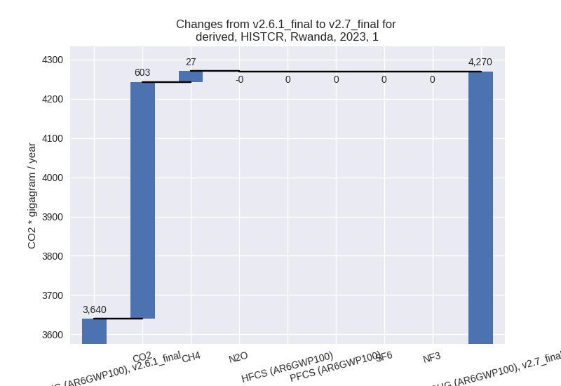
For 1990-2023 the changes per gas
are:
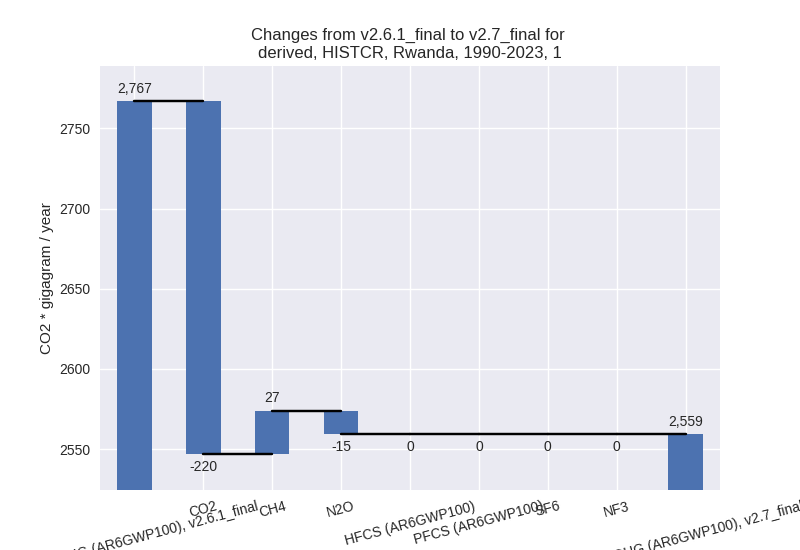
The changes come from the following subsectors:
- 1.A: Total sectoral emissions in 2022 are 3277.50
Gg CO2 / year which is 78.8% of category 1 emissions. 2023 Emissions
have changed by 22.8% (630.08 Gg CO2
/ year). 1990-2023 Emissions have changed by -11.9% (-207.86 Gg CO2 / year). For 2023
the changes per gas
are:
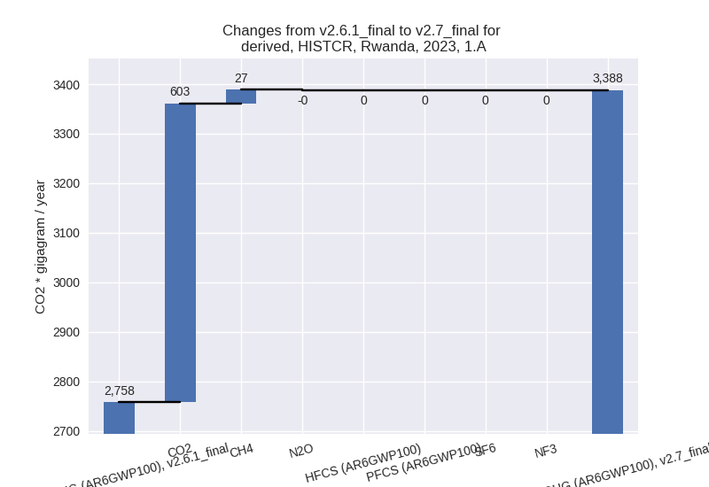
For 1990-2023 the changes per gas
are:
There is no subsector information available in PRIMAP-hist.
- 1.B.1: Total sectoral emissions in 2022 are 878.56
Gg CO2 / year which is 21.1% of category 1 emissions. 2023 Emissions
have changed by 0.0% (0.00 Gg CO2 /
year). 1990-2023 Emissions have changed by 0.0% (0.00 Gg CO2 / year).
- 1.B.2: Total sectoral emissions in 2022 are 2.60 Gg
CO2 / year which is 0.1% of category 1 emissions. 2023 Emissions have
changed by 0.0% (0.00 Gg CO2 /
year). 1990-2023 Emissions have changed by 0.0% (0.00 Gg CO2 / year).
- 2: Total sectoral emissions in 2022 are 326.47 Gg
CO2 / year which is 2.4% of M.0.EL emissions. 2023 Emissions have
changed by -6.2% (-21.31 Gg CO2 /
year). 1990-2023 Emissions have changed by -22.7% (-24.56 Gg CO2 / year). For 2023
the changes per gas
are:
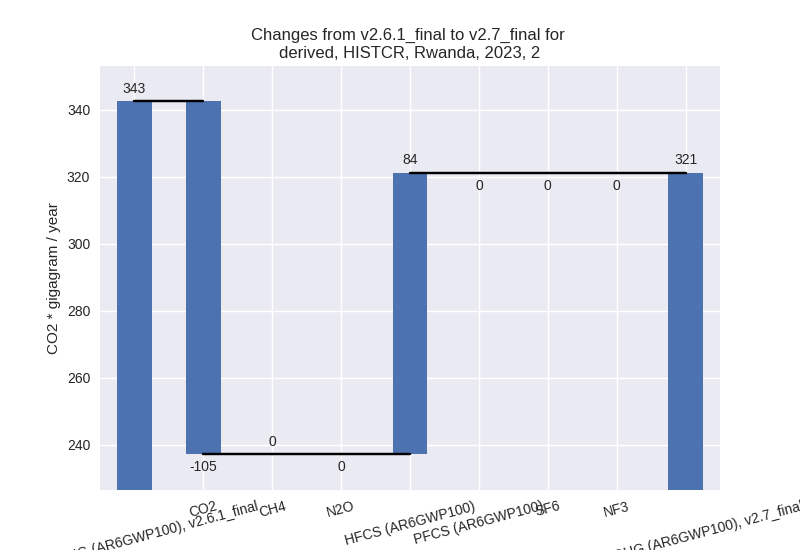
For 1990-2023 the changes per gas
are:
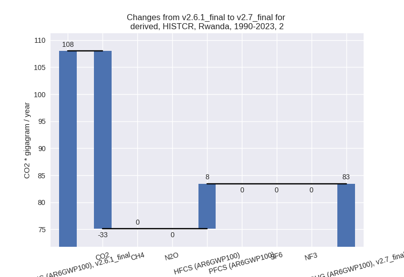
- M.AG: Total sectoral emissions in 2022 are 6884.60
Gg CO2 / year which is 50.2% of M.0.EL emissions. 2023 Emissions have
changed by 35.6% (1776.12 Gg CO2 /
year). 1990-2023 Emissions have changed by 37.5% (1194.13 Gg CO2 / year). For 2023
the changes per gas
are:
For 1990-2023 the changes per gas
are:
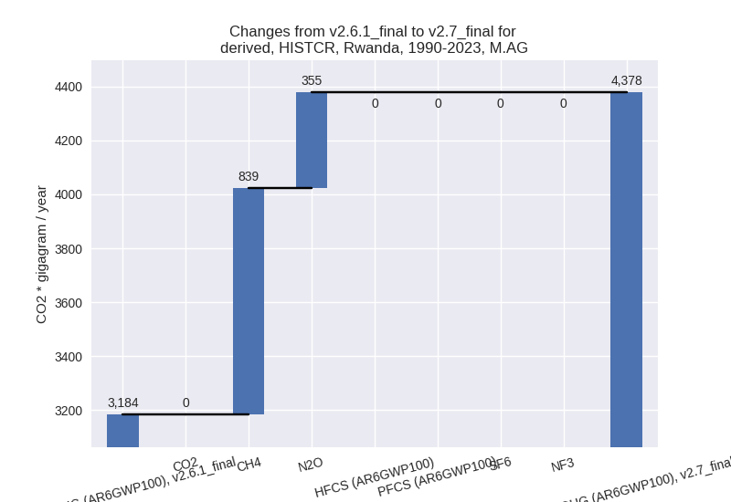
The changes come from the following subsectors:
- 3.A: Total sectoral emissions in 2022 are 5573.07
Gg CO2 / year which is 80.9% of category M.AG emissions. 2023 Emissions
have changed by 33.3% (1362.58 Gg
CO2 / year). 1990-2023 Emissions have changed by 34.9% (921.44 Gg CO2 / year). For 2023 the
changes per gas
are:
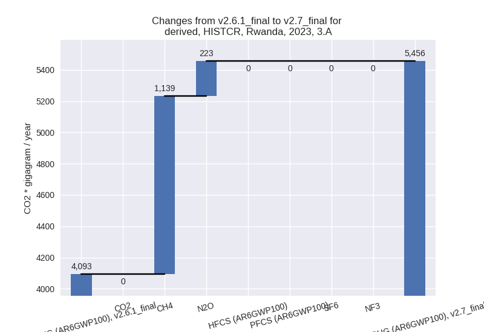
For 1990-2023 the changes per gas
are:
There is no subsector information available in PRIMAP-hist.
- M.AG.ELV: Total sectoral emissions in 2022 are
1311.53 Gg CO2 / year which is 19.1% of category M.AG emissions. 2023
Emissions have changed by 45.9%
(413.55 Gg CO2 / year). 1990-2023 Emissions have changed by 49.9% (272.69 Gg CO2 / year). For 2023 the
changes per gas
are:
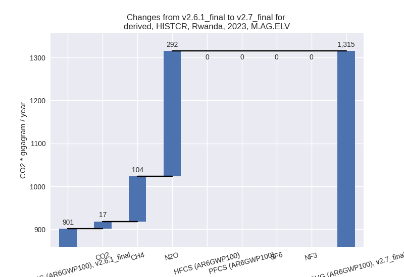
For 1990-2023 the changes per gas
are:
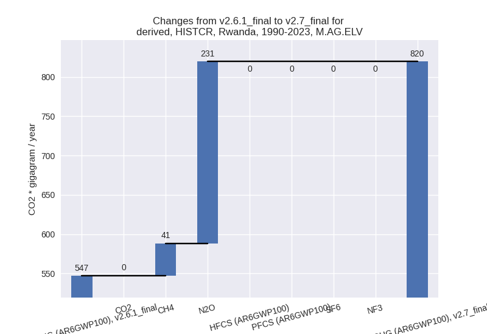
There is no subsector information available in PRIMAP-hist.
- 4: Total sectoral emissions in 2022 are 2233.06 Gg
CO2 / year which is 16.3% of M.0.EL emissions. 2023 Emissions have
changed by 80.2% (1019.89 Gg CO2 /
year). 1990-2023 Emissions have changed by 68.2% (477.59 Gg CO2 / year). For 2023 the
changes per gas
are:
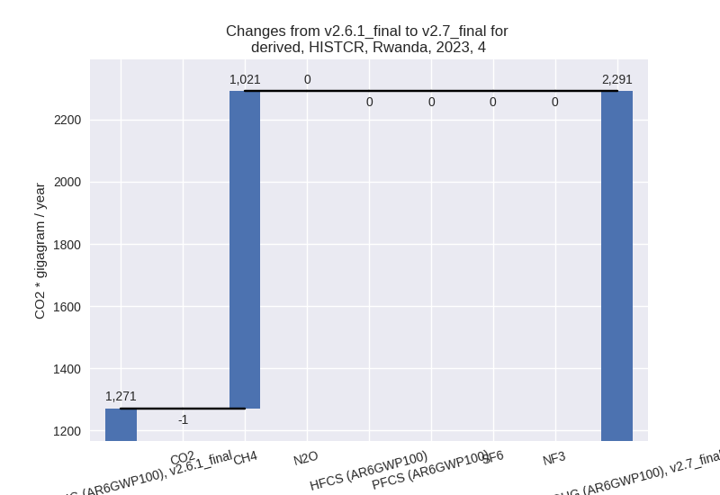
For 1990-2023 the changes per gas
are:
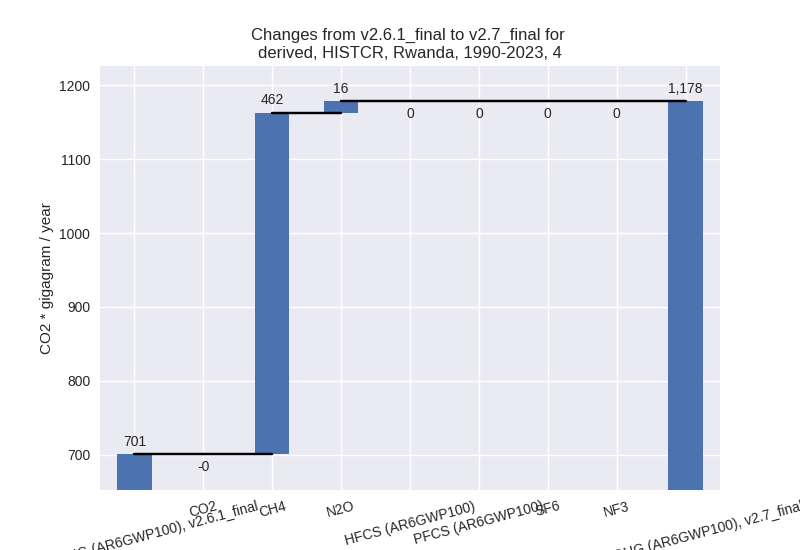
- 5: Total sectoral emissions in 2022 are 101.49 Gg
CO2 / year which is 0.7% of M.0.EL emissions. 2023 Emissions have
changed by 0.0% (0.00 Gg CO2 /
year). 1990-2023 Emissions have changed by 0.0% (0.00 Gg CO2 / year).
third party scenario (HISTTP):
Most important changes
per time frame
For 2023 the following sector-gas combinations have
the highest absolute impact on national total KyotoGHG (AR6GWP100)
emissions in 2023 (top 5):
- 1: 1.A, CO2 with 160.43 Gg CO2 / year (12.4%)
- 2: 2, HFCS (AR6GWP100) with 84.00 Gg CO2 / year (468.8%)
- 3: M.AG.ELV, CO2 with 17.20 Gg CO2 / year (89.7%)
- 4: 2, CO2 with 2.79 Gg CO2 / year (0.8%)
- 5: 4, CO2 with -1.11 Gg CO2 / year (-29.8%)
For 1990-2023 the following sector-gas combinations
have the highest absolute impact on national total KyotoGHG (AR6GWP100)
emissions in 1990-2023 (top 5):
- 1: 1.A, CO2 with 8.59 Gg CO2 / year (1.3%)
- 2: 2, HFCS (AR6GWP100) with 8.33 Gg CO2 / year (98.5%)
- 3: 4, CO2 with -0.27 Gg CO2 / year (-20.1%)
- 4: 2, CO2 with -0.23 Gg CO2 / year (-0.3%)
- 5: M.AG.ELV, CO2 with 0.21 Gg CO2 / year (3.0%)
Changes in the main sectors for aggregate KyotoGHG (AR6GWP100)
are
- 1: Total sectoral emissions in 2022 are 3298.83 Gg
CO2 / year which is 40.6% of M.0.EL emissions. 2023 Emissions have
changed by 5.0% (160.43 Gg CO2 /
year). 1990-2023 Emissions have changed by 0.3% (8.59 Gg CO2 / year). For 2023 the
changes per gas
are:
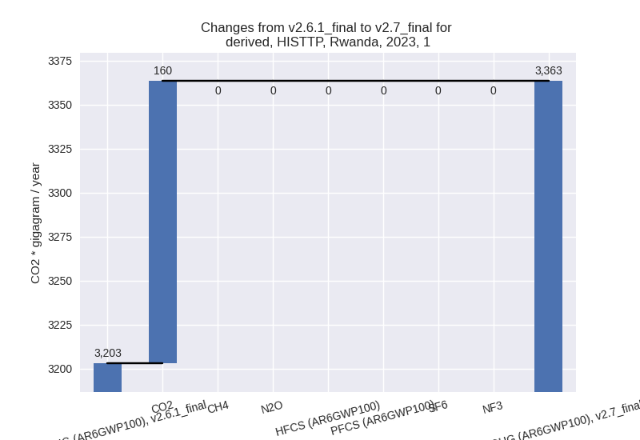
The changes come from the following subsectors:
- 1.A: Total sectoral emissions in 2022 are 2417.67
Gg CO2 / year which is 73.3% of category 1 emissions. 2023 Emissions
have changed by 6.9% (160.43 Gg CO2
/ year). 1990-2023 Emissions have changed by 0.6% (8.59 Gg CO2 / year). For 2023 the
changes per gas
are:
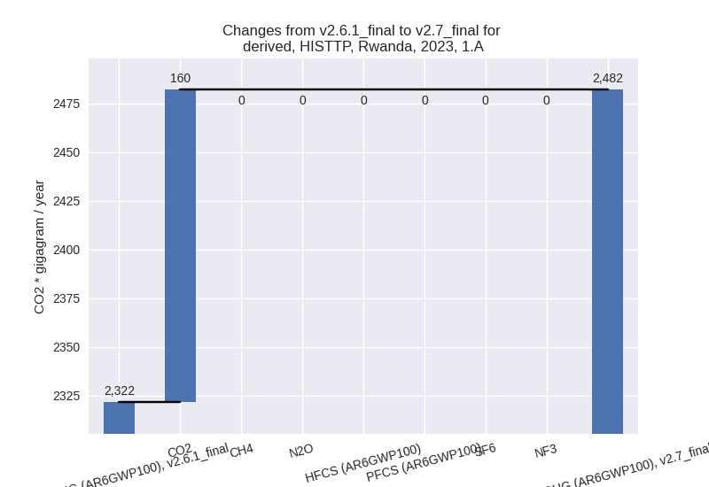
There is no subsector information available in PRIMAP-hist.
- 1.B.1: Total sectoral emissions in 2022 are 878.56
Gg CO2 / year which is 26.6% of category 1 emissions. 2023 Emissions
have changed by 0.0% (0.00 Gg CO2 /
year). 1990-2023 Emissions have changed by 0.0% (0.00 Gg CO2 / year).
- 1.B.2: Total sectoral emissions in 2022 are 2.60 Gg
CO2 / year which is 0.1% of category 1 emissions. 2023 Emissions have
changed by 0.0% (0.00 Gg CO2 /
year). 1990-2023 Emissions have changed by 0.0% (0.00 Gg CO2 / year).
- 2: Total sectoral emissions in 2022 are 450.94 Gg
CO2 / year which is 5.5% of M.0.EL emissions. 2023 Emissions have
changed by 24.2% (86.79 Gg CO2 /
year). 1990-2023 Emissions have changed by 8.2% (8.09 Gg CO2 / year). For 2023 the
changes per gas
are:
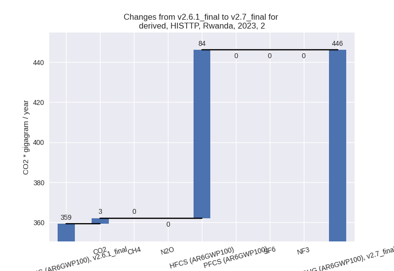
For 1990-2023 the changes per gas
are:
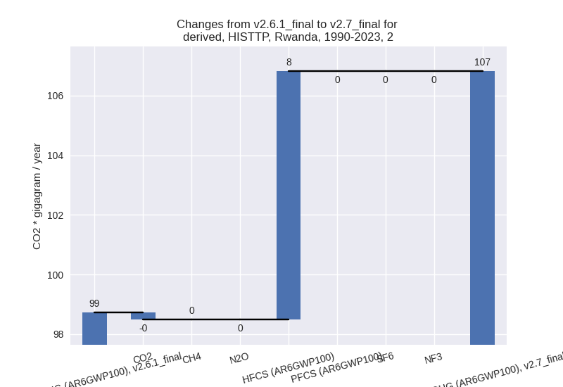
- M.AG: Total sectoral emissions in 2022 are 3148.63
Gg CO2 / year which is 38.7% of M.0.EL emissions. 2023 Emissions have
changed by 0.6% (17.20 Gg CO2 /
year). 1990-2023 Emissions have changed by 0.0% (0.21 Gg CO2 / year).
- 4: Total sectoral emissions in 2022 are 1129.93 Gg
CO2 / year which is 13.9% of M.0.EL emissions. 2023 Emissions have
changed by -0.1% (-1.11 Gg CO2 /
year). 1990-2023 Emissions have changed by -0.0% (-0.27 Gg CO2 / year).
- 5: Total sectoral emissions in 2022 are 101.49 Gg
CO2 / year which is 1.2% of M.0.EL emissions. 2023 Emissions have
changed by 0.0% (0.00 Gg CO2 /
year). 1990-2023 Emissions have changed by 0.0% (0.00 Gg CO2 / year).